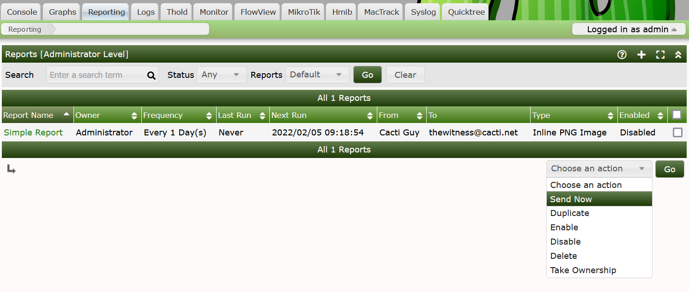
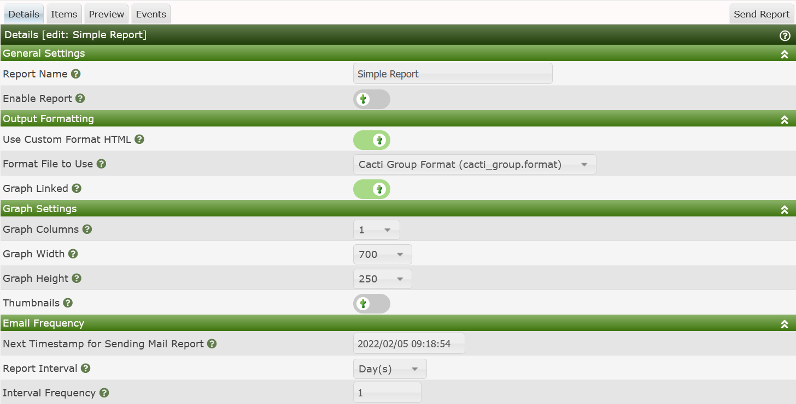
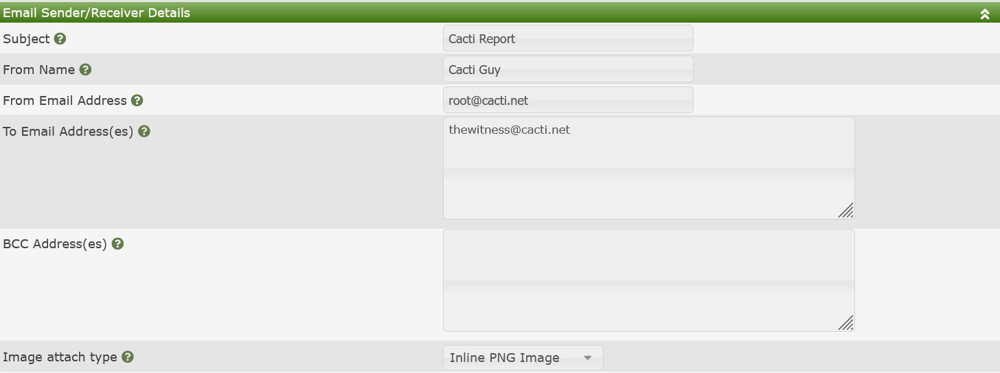

Reports User
This section will describe the user view to Cacti's Reports feature.
The Reports User interface allows you to see and manage your own reports. This is unlike the Reports Administration interface that allows you to manage others reports in addition to your own.
The Web Interface
The user of any Report begins on the main Reports tab in Cacti. A screen shot of the Reports tab is shown below.

When viewing any Reports from this interface, you will see the following columns:
- Report Name - The name of the Report.
- Owner - The Cacti account that has ownership of the Report.
- Frequency - How often the Report is to be sent to the distribution.
- Last Run - The last time that the Report was sent to the distribution.
- Next Run - The approximate next time that the report is to be sent. this is not an exact number. It does depend on the poller first running. So, depending on how long your poller runs for, this time could be off by a few minutes.
- From - The From Name portion of the From Email address
- To - The list of Emails that the reports is to be sent to.
- Type - The Image format and the type of embedding done in the Email.
- Enabled - Is the Report able to be sent on the Schedule.
The actions that you can take on an existing Report as an Administrator include:
- Send Now - Force send one or more Reports now
- Duplicate - Duplicate one or more Reports
- Enable - Enable one or more Reports
- Disable - Disable one or more Reports
- Delete - Delete one or more Reports
Report Editing
When you click the Add button on the right side of the Reports page, or Click on the Report Name of an existing Report, you will be presented with the interface below.

This section includes:
- Report Name - The Name of the Report
- Enable Report - Is the Report Enabled
- Use Custom Format HTML - This is an indication that you wish to use a custom html/css document that you can use to customize the layout of your reports and add corporate branding for example.
- Format File to Use - The specific html/css file to use.
- Graphs Linked - Provide the recipient of the report a ling back to the actual graph in Cacti.
- Graph Columns - The number of Graph columns to use per row.
- Graph Width - The width of each Graph
- Graph Height - The height of each Graph
- Thumbnails - Should the Graphs be rendered in Thumbnail mode
- Next Timestamp of Sending Mail Report - The approximate next time to send out the Report.
- Report Interval - The frequency to send the report. Options are every X Minute, Hours, Days, Weeks, Months on a Day of the Month, Months on the Day of the Week, and Years.
- Interval Frequency - How often to send, for example if you select Days, and the Interval is one, it means every day, if you select 2, it means every other day.
The Email Frequency section does not use the same layout as does our Automation Networks. Correcting that is a future project for the team.
The last section of the Report Details is the Email Sender/Receiver section as shown below.

From here you can set the following columns.
- Subject - The Email subject.
- From Name - The From Name on the Email. For example Cacti Administrator
- From Email Address - The From Email address. For example
noreply@mydomain.com
- To Email Address(es) - A comma delimited list of Email addresses that should receive the Report.
- BCC Address(es) - An anonymized list of Email recipients
- Image attach type - This defines how the Cacti Graph images get attached to the Email. Maybe are for legacy purposes. Most users will use Inline PNG or Inline JPG.
Once you save a new Report additional Tabs will show up. Those tabs are:
- Items - The Graph's, Tree's, Text, Horizontal Rules, and Device's to place on the Report.
- Preview - See a Preview of your Report
- Events - Approximate Future Event Days for your Report to be sent. This helps interpret the idiosyncrasies of the scheduler design.
Copyright (c) 2004-2024 The Cacti Group